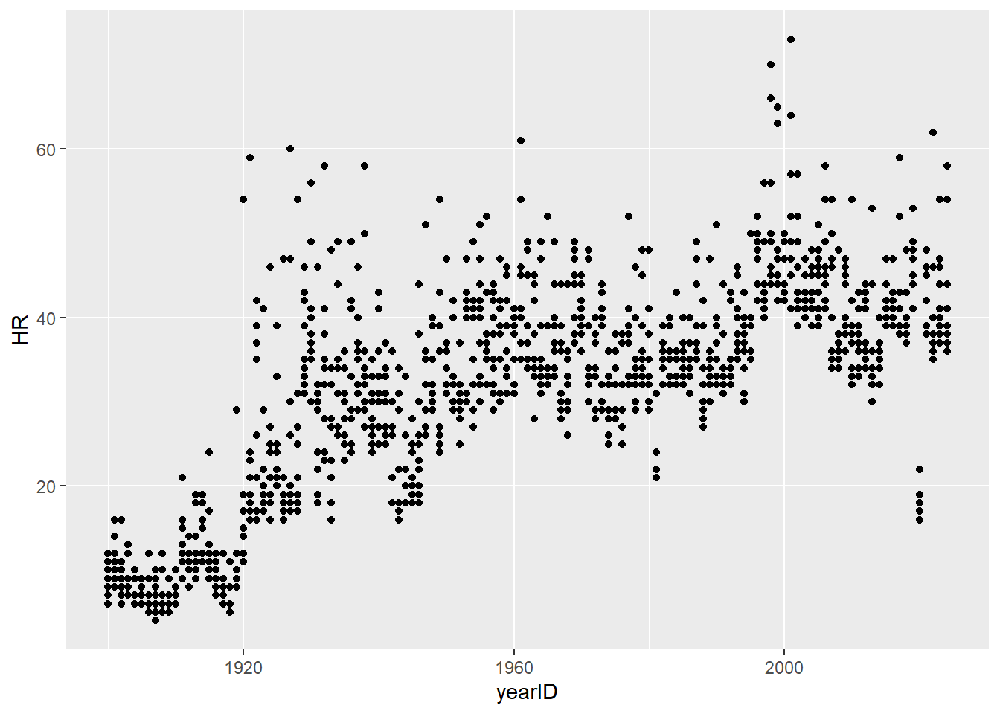
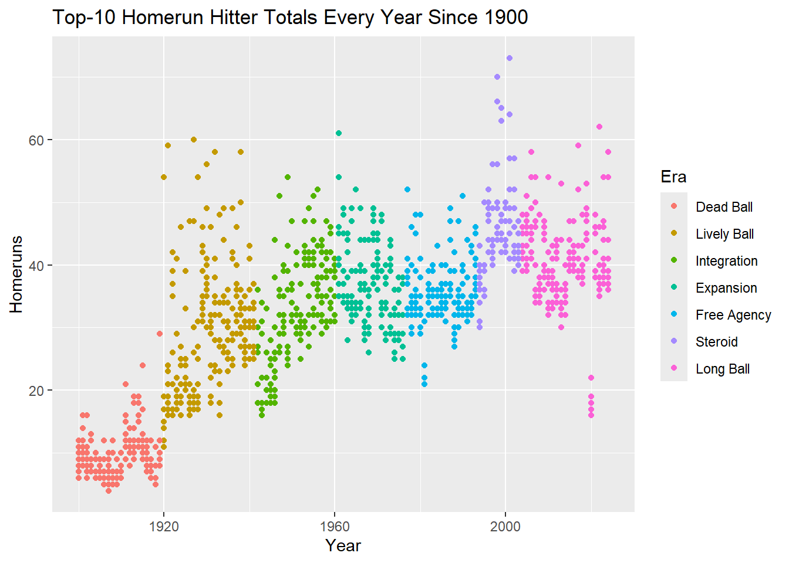
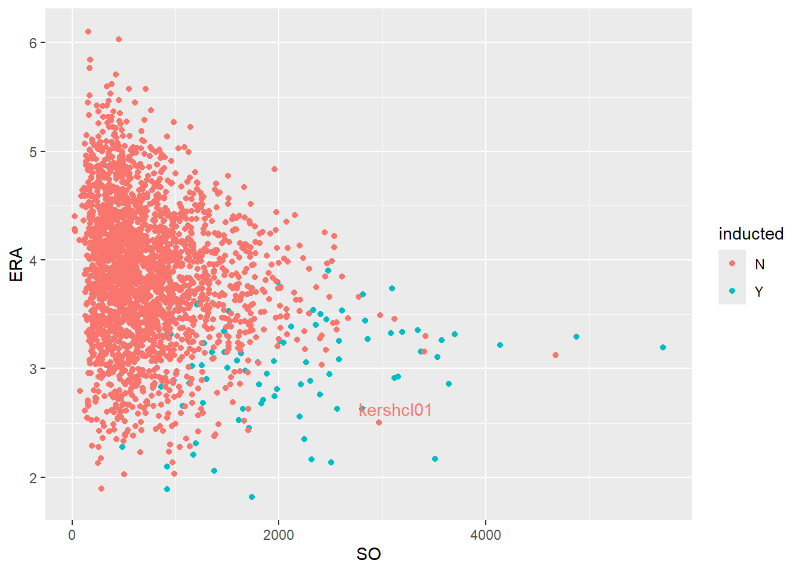

library(Lahman)
library(tidyverse)
library(knitr)MA388 Sabermetrics: Lesson 5
Introduction to R Graphics - Part II
Review:
I found the plot below here. Let’s recreate it! You can get part of the way there with what you already know.

It will help you to know the dates that correspond to the beginning of different eras:
- 1900: Dead Ball
- 1920: Live Ball
- 1942: Integration
- 1961: Expansion
- 1977: Free Agent
- 1994: Steroid
- 2004: Contemporary
First, obtain the top-10 HR hitters for each year from 1900 to the present.
Let’s plot what we have to far.

Not let’s figure out how to color the points by era. We’ll need to introduce a factor variable that represents dates according to their corresponding eras. See the example in ABDWR section 3.2.1 for an example of the cut() function.
batting_df <- batting_df |>
mutate(era = cut(yearID,
breaks = c(1899, 1919, 1941, 1960, 1976,
1993, 2003, 2050),
labels = c("Dead Ball", "Lively Ball", "Integration",
"Expansion", "Free Agency", "Steroid",
"Long Ball")
)
)Let’s see a sample of what our data frame looks like now:
batting_df |>
slice_sample(n = 10)# A tibble: 10 × 3
yearID HR era
<int> <int> <fct>
1 2006 49 Long Ball
2 1931 19 Lively Ball
3 1951 29 Integration
4 2020 16 Long Ball
5 2008 34 Long Ball
6 1909 5 Dead Ball
7 2017 39 Long Ball
8 2013 44 Long Ball
9 1986 31 Free Agency
10 1933 16 Lively BallReady to add the color?

Factor Variables
Previously, we focused on scatter plots of two numeric variables. Now we are introducing factor variables. With factor variables we may wish to create univariate visualizations for each level of a factor – or perhaps multivariate visualizations for each level of a factor.
Example 1
Construct a boxplot of salaries by decade.
Here, the `factor" is really the factor representation of a numeric variable:yearID`. Don’t worry - we’re getting to a pure factor variable.
Let’s create a decade variable.
Salaries |>
mutate(decade = floor(yearID / 10) * 10) |>
head() yearID teamID lgID playerID salary decade
1 2004 SFN NL aardsda01 300000 2000
2 2007 CHA AL aardsda01 387500 2000
3 2008 BOS AL aardsda01 403250 2000
4 2009 SEA AL aardsda01 419000 2000
5 2010 SEA AL aardsda01 2750000 2010
6 2011 SEA AL aardsda01 4500000 2010Salaries |>
mutate(decade = floor(yearID / 10) * 10) |>
ggplot(aes(x = as.factor(decade), y = salary)) +
geom_boxplot() +
scale_y_continuous(labels = scales::comma) +
labs(title = "MLB Salaries by Decade",
y = "Salary",
x = "Decade") +
coord_flip()
Example 2
Determine the average runs scored per game (average team score, not two-team total score) by teams in Major League Baseball since 1950. Note any differences in American League and National League teams.
lg_rpg_df <- Teams |>
select(yearID, lgID, R, G) |>
filter(yearID >= 1950) |>
group_by(yearID, lgID) |>
summarize(RPG = sum(R) / sum(G))
head(lg_rpg_df)# A tibble: 6 × 3
# Groups: yearID [3]
yearID lgID RPG
<int> <fct> <dbl>
1 1950 AL 5.04
2 1950 NL 4.66
3 1951 AL 4.63
4 1951 NL 4.46
5 1952 AL 4.18
6 1952 NL 4.17lg_rpg_df |>
ggplot(aes(x = yearID, y = RPG, color = lgID)) +
geom_line() +
geom_smooth() +
labs(title = "League Runs Per Game Since 1950",
x = "Year",
y = "Runs Per Game",
color = "League")
What jumps out at you in this figure?
In 2021, the Baseball Hame of Fame announced that no players received the minimum vote of 75% to be inducted. Famous players on the ballot included Barry Bonds, Roger Clemens, and Curt Schilling.
Using the HallofFame data frame in the Lahman package, plot the number of Hall of Fame inductees each year by the Baseball Writers Association of America (BBWAA) in the player category. Change the \(y\)-axis label to “Hall of Fame inductees” and \(x\)-axis to “year”. The HallofFame data frame contains a row for every year a player was voted on and whether he was inducted.
Suggested steps:
Filter the data frame to contain only inducted players (
inducted == "Y",category == "Player",votedBy == "BBWAA") ().Determine how many players were inducted each year ().
Plot the number of inducted players by year.
# Number of inductees by year.
yearlyHF <- HallOfFame |>
filter(inducted == "Y",
category == "Player",
votedBy == "BBWAA") |>
count(yearID)
# Unfortunately, yearlyHF data frame does not contain years with no inductees.
# We can join it with another data frame containing all the years and replace
# NAs with 0s.
yearlyHF <- yearlyHF |>
full_join(data.frame(yearID = 1940:2022)) |>
mutate(n = replace_na(n,0))
Roger Clemens and Curt Schilling have been on the ballot for the Hall of Fame several times. After not being selected for a 10th time in 2022, they were removed from the ballot.
Clemens and Schilling

First, let’s create a data set containing all pitchers with an indicator of whether they are in the Hall of Fame.
# Get career wins, earned run average, and strikeouts.
careers <- Pitching |>
group_by(playerID) |>
summarize(W = sum(W),
ER = sum(ER),
IPouts = sum(IPouts),
SO = sum(SO)) |>
mutate(ERA = 9*ER/(IPouts/3)) |>
filter(IPouts/3 > 500)
# Add whether they were inducted in the Hall of Fame.
careers <- HallOfFame |>
filter(inducted == "Y",
category == "Player") |>
select(playerID, inducted) |>
right_join(careers) |>
mutate(inducted = replace_na(inducted,"N"))Let’s look at career strikeouts by whether or not they were inducted.
careers |>
ggplot(aes(x = SO, y = ERA, color = inducted)) +
geom_point(size = 1)
Let’s figure out where Clemens and Schilling are.
library(ggrepel)
clemschil <- careers |>
filter(playerID %in% c("clemero02", "schilcu01"))
careers |>
ggplot(aes(x = SO, y = ERA, color = inducted)) +
geom_point() +
geom_text_repel(data = clemschil,
aes(x = SO, y = ERA, label = playerID),
show.legend = FALSE)
Your Turn
In the last figure, there is an uninducted player with about 2500 strikeouts and a 2.5 ERA. Determine who that player is and add his playerID to the plot above.
